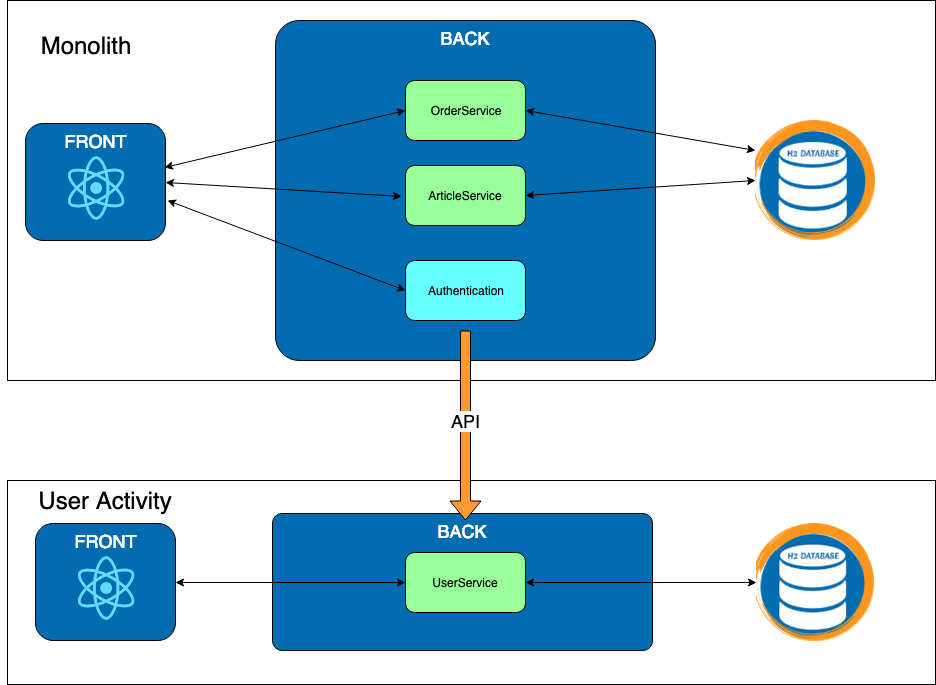

Exercise 1 : User Activity
Previously on HOMicS -> Exercise 0: Monolith
Context
In our application, we track user activity on log in and log out. This functionality is already implemented in the monolith codebase.
In WebSecurityConfig, you can find two classes CustomAuthenticationSuccessHandler and
CustomLogoutSuccessHandler. Those classes implement some Spring Security interfaces to define a strategy used to
handle a successful user authentication or logout. In our case, they call the UserActivityService which save the event
in database through it UserActivityRepository.
 you can read more about spring security
you can read more about spring security AuthenticationSuccessHandler documentation
here
The front fetches those events for display through an internal API in UserActivityInternalController.
Goal
We are going to create a new service in charge of user activities. Let's be inventive and call it: user-activity. It will store every user activities in its own database and display the information on a dedicated page. The monolith will call this micro-service via API to notify on a success login or success logout.

At your keyboard
Checkout the branch:
git checkout exercise-1
There is a new folder for the user-activity microservice. You are not going to start from scratch but you will need to implement some of the API.
1.1 - User Activity
TODO 1.1.1: Save an user activity
In UserActivityApiController, register any activity send via the new API /user/api/activity.
 You will need to use
You will need to use @PostMapping with @RequestBody to extract the right DTO.
 The
The @RequestMapping already specified the /user/api.
Checklist :
-
Run the user-activity project via the following command to access the microservice via localhost:8080/user/userActivity:
mvn spring-boot:run -pl user-activityYou should see your microservice up. The User Activity micro tab works but any other tabs return a 404. It's logic since the monolith is the one providing those pages but it isn't up.
-
Call the api via the following command to set an activity:
curl -d '{"username":"Jean Bonbeurre", "activityType":"LOGIN", "activityDate":"2019-04-18T15:00:00.000Z"}' -H "content-type: application/json" -X POST http://localhost:8080/user/api/activity -
Check on the localhost:8080/user/userActivity that you can see the new activity that you just sent.
TODO 1.1.2: Problem with ports
Start the monolith
mvn spring-boot:run -pl monolith
 You realize that you have the following error :
You realize that you have the following error :
2019-03-31 18:20:56.600 ERROR 10837 --- [ restartedMain] o.s.b.d.LoggingFailureAnalysisReporter :
***************************
APPLICATION FAILED TO START
***************************
Description:
The Tomcat connector configured to listen on port 8080 failed to start. The port may already be in use or the connector may be misconfigured.
Action:
Verify the connector's configuration, identify and stop any process that's listening on port 8080, or configure this application to listen on another port.
The reason is that the two services are started on the same port. Let's change the port for user-activity.
Open the file application.yaml and complete the TODO 1.1.2 to change the server port to 9001
Checklist :
-
Restart your two apps :
# monolith mvn spring-boot:run -pl monolith # user-activity mvn spring-boot:run -pl user-activity -
Log in on to the app localhost:8080/mono/login and go to User Activity micro tab. You can see the table for the user activities but it's empty. Weird right, since you just logged in.
How does the monolith discuss with the User microservice?
1.2 - Monolith
TODO 1.2.1:
Edit the post() method to call the microservice with restTemplate`.
TODO 1.2.2:
Use the previous method to send the data instead of saving it in the database.
Checklist :
-
Restart your two apps :
# monolith mvn spring-boot:run -pl monolith # user-activity mvn spring-boot:run -pl user-activity -
Log on the monolith. Navigate to the User Activity Micro tab and you should see the same table than before with your activities.
TODO 1.2.3: Clean the monolith
As a final step, remove any code related to the user activity in the monolith.
We took care of the front for you.
Great, you just created your first microservice and connected it to your monolith. Not too bad.
List of TODOs
1.1.1 - file com.homics.useractivity.controller.UserActivityApiController
1.1.2 - file application.yaml for user-activity
1.2.(1/2/3) - file com.homics.monolith.service.UserActivityService
1.2.3 - below * file com.homics.monolith.controller.UserActivityInternalController * file com.homics.monolith.model.UserActivity
Database
You can access the database console via the following url.
Results
You should see the following screen.

Did you notice the port after localhost?
Did you realize that you can access the User microservice on port 9001 without
authentication?
The user navigating on the application can see that we are switching between two ports/applications. We did not copy the authentication on the new microservice but we could do it.
Let's see in the next exercise how to centralize the authentication and to have a single entry point in our application.